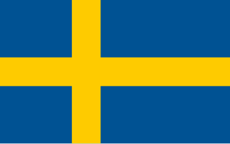
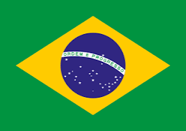

Copa do Mundo 1958

País-sede

Campeão
Vice-campeão
Contexto
O futebol começava a se popularizar globalmente graças ao crescimento da televisão. Foi a primeira Copa transmitida internacionalmente para vários países. O Brasil vivia um período de otimismo e desenvolvimento econômico.
Destaques
Primeiro título brasileiro. Surgimento de Pelé, então com 17 anos. Brasil venceu a final por 5 a 2.
Artilharia
Artilheiro: Just Fontaine (França) marcou 13 gols. Vice-artilheiro: Helmut Rahn (Alemanha Ocidental) marcou 6 gols.